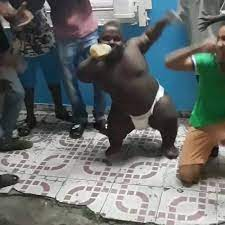

Catalogo de Anões
Anões Angolanos
Um anão angolano, habitante das paisagens diversificadas e ricas em cultura de Angola, exibe uma presença vibrante e resiliente. Com uma estatura graciosa, mas dotado de uma personalidade imponente, ele carrega muito peso mesmo com sua baixa estatura. Os olhos vazios e sem esperanças refletem a história do país, enquanto um sorriso acolhedor revela a força do seu amor pela música e dança; é evidente em seus movimentos graciosos, que ecoam a batida pulsante da vida angolana. Atualmente um desses custa na bagatela de 1000 mil dolaresㅤㅤㅤㅤㅤㅤㅤㅤㅤㅤㅤㅤㅤㅤㅤㅤㅤㅤㅤㅤㅤㅤㅤㅤㅤㅤㅤㅤㅤㅤㅤㅤdesce ㅤㅤㅤㅤㅤㅤㅤㅤㅤㅤㅤsegue pra cá ←←←ㅤㅤㅤㅤㅤe ai vc volta ao topoㅤㅤㅤㅤㅤ☜(ﾟヮﾟ☜)ㅤㅤㅤㅤㅤㅤㅤㅤㅤㅤㅤ
https://www.youtube.com/watch?v=kyuR6YqwMV4Dwayne Johnson(The Rock Anão)
Dwayne Johnson, no papel de um anão, personifica força e resiliência apesar da estatura. Seu olhar reflete superação e confiança, enquanto seu sorriso irradia camaradagem. Líder inspirador, sua destreza e espírito incansável o tornam essencial na comunidade anã. Atualmente um desses custa na casa dos 7000 mil dolares pois é muito camarada
 https://br.pinterest.com/pin/1035687245530386247/
https://br.pinterest.com/pin/1035687245530386247/
Anão Flamenguista
O Anão do Flamengo é um icônico torcedor com paixão ardente pelo clube. Sua figura cativante e alegre nas arquibancadas transmite fervor e lealdade. Com bandeira em mãos, ele personifica a energia contagiante da torcida rubro-negra. Valor 100 real
https://www.tiktok.com/@rafaelanao22/video/6989402586919030021Thomas Shelby Anão
Pequeno em estatura, mas grande em presença, o "Thomas Shelby anão" de Peaky Blinders cativa com sua astúcia inabalável. Seu olhar penetrante e aura de liderança refletem sua herança na trama. Ele personifica a força dos Peaky Blinders em um pacote notável. Valor 1 vida humada
 https://br.ifunny.co/tags/tomasshelby
https://br.ifunny.co/tags/tomasshelby
Anão de Fralda
Um adorável anão, vestindo fraldas infantis, irradia uma doçura encantadora. Sua pequena estatura contrasta com a inocência e alegria das fraldas de bebê. Uma figura que derrete corações com sua aparência única e adorável. Valor uno mile 96
 https://www.facebook.com/watch/?v=427662548040965A seguir algunhas especies de anões não catalogadas em imagens por causa de sua raridade porem todos esses pode ser conseguidas sobe encomenda pela pechincha de 1 bilhão
Anões Luminosos de Lumina: Os Anões Luminosos, originários da cidade flutuante de Lumina, possuem pele translúcida que irradia uma suave luminescência. Essa característica única os torna capazes de iluminar as cavernas escuras onde habitam, criando um espetáculo de cores nas profundezas.
Anões Alados de Etheria: Os Anões Alados de Etheria têm asas magníficas que lhes permitem voar pelos céus etéreos de seu reino. Eles construíram suas cidades nas alturas, entre as nuvens, e dominaram a arte da engenharia aérea.
Anões Subaquáticos de Marprofundo: Esses anões vivem nas profundezas dos oceanos, adaptados para a vida subaquática. Com brânquias em suas bochechas e olhos luminescentes, eles exploram as maravilhas do mundo marinho, construindo cidades nas abóbadas submarinas.
Anões de Pedra-Viva de Geolândia: Os Anões de Pedra-Viva possuem pele e ossos incrivelmente resistentes, camuflando-se perfeitamente nas formações rochosas de Geolândia. Eles têm uma ligação especial com as montanhas e dominam a arte da escultura e da arquitetura em pedra.
Anões da Floresta Encantada: Estes anões vivem nas profundezas das florestas encantadas, em perfeita harmonia com a natureza. São conhecidos por suas habilidades mágicas e pela capacidade de se comunicar com os animais da floresta.
Anões Reluzentes de Cristalor: Os Anões Reluzentes são conhecidos por sua pele cristalina e cabelos cintilantes. Habituados às minas de gemas de Cristalor, são habilidosos em lapidação e joalheria, criando ornamentos magníficos.
Anões das Nuvens de Céufirme: Vivendo nas alturas das nuvens, esses anões construíram cidades flutuantes entre os céus. Seus cabelos esvoaçantes e olhos claros os ajudam a vislumbrar as estrelas e tempestades vindouras.
Anões de Metal Forjado de Ferrogrão: Esses anões têm uma afinidade inata pela metalurgia. Com pele resistente como ferro e olhos brilhantes como metais preciosos, eles criam armaduras e armas inigualáveis em sua cidade subterrânea de Ferrogrão.
Anões Pintores de Cromia: Os Anões Pintores de Cromia têm pele que muda de cor conforme seu estado emocional, servindo como uma linguagem silenciosa. Dotados de incrível criatividade, suas pinturas ganham vida e narram histórias em suas galerias subterrâneas.
Anões Selvagens de Sylvaterra: Vinculados à natureza, os Anões Selvagens têm cabelos e barbas entrelaçados com flores e folhagens. Eles dominaram as artes druídicas, sendo guardiões dos segredos das florestas de Sylvaterra.
Anões do Gelo de Glacártico: Adaptados ao clima gélido, esses anões têm pele azulada e olhos brilhantes como o gelo. Suas cidades subterrâneas são construídas sobre formações de gelo e eles são hábeis em esculpir esculturas de gelo impressionantes.
Anões Celestiais de Astrum: Habitantes dos picos mais altos das montanhas, esses anões são sintonizados com os astros. Com olhos estelares e pele cintilante, eles são os guardiões do conhecimento cósmico em suas bibliotecas celestiais.
Anões Viajantes de Nomadia: Os Anões Viajantes vivem em grandes caravanas que percorrem vastas planícies. Com roupas coloridas e adornos exóticos, eles são conhecidos por suas histórias encantadoras e habilidades de negociação.
Anões Harmoniosos de Sonópolis: Esses anões têm uma incrível conexão com o som e a música. Vivem em cidades construídas em cavernas acústicas e sua harmonia coletiva é capaz de curar e inspirar.
Anões Tecnológicos de Mecanópolis: Mestres da engenharia, os Anões Tecnológicos habitam uma cidade subterrânea repleta de engrenagens e dispositivos complexos. Com olhos brilhantes e braços hábeis, eles forjam maravilhas mecânicas.
Anões das Areias de Desertópolis: Adaptados ao deserto, esses anões possuem pele dourada e olhos profundos. Com habilidades de escavação e navegação nas dunas, eles criaram uma cidade subterrânea que abriga oásis secretos.
Anões dos Sonhos de Oneirópolis: Esses anões vivem nos reinos dos sonhos, onde suas características se transformam conforme as imaginações. Com a capacidade de se mover entre os sonhos e a realidade, eles são artistas das ilusões.
Anões Anciãos de Tempus: Esses anões transcendem o tempo, vivendo em uma cidade flutuante fora das restrições temporais. Com longas barbas brancas e olhos sábios, eles guardam os segredos do passado, presente e futuro.
Anões de Pelagem de Feralia: Adaptações evolutivas deram a esses anões uma pelagem densa e olfato aguçado. Vivem em harmonia com as feras e são caçadores exímios nas florestas selvagens de Feralia.
Anões Ilusionistas de Espécula: Habilidosos em magia ilusionista, esses anões brincam com a percepção. Com aparência camaleônica e olhos que refletem mundos imaginários, eles encantam e intrigam os que os observam.